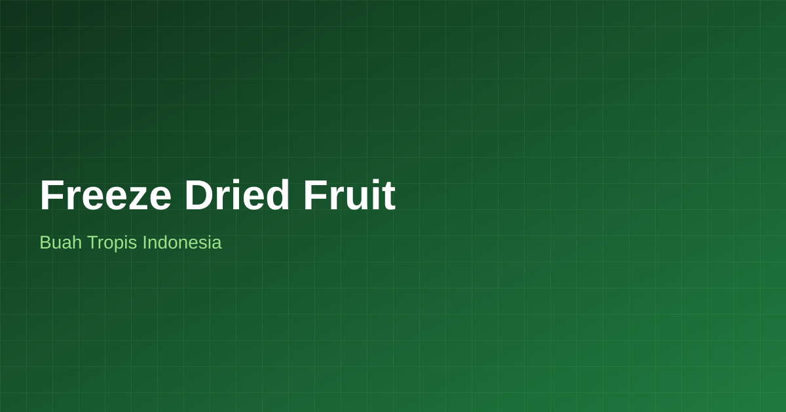

Indonesia memiliki kekayaan buah tropis yang dapat diolah menjadi freeze dried fruit berkualitas, mulai dari mangga, nanas, hingga buah-buahan lokal lainnya dengan rasa dan warna alami yang tetap terjaga.
💬 WhatsApp Raja Freeze Dried Food
Indonesia dikenal sebagai negara dengan keanekaragaman buah tropis yang melimpah. Melalui proses freeze drying, buah-buahan tropis seperti mangga, nanas, dan berbagai buah lokal lainnya dapat diolah menjadi produk freeze dried fruit yang mempertahankan rasa dan warna alami.
Raja Freeze Dried Food berkomitmen mengolah buah-buahan tropis Indonesia menjadi produk freeze dried fruit yang dapat dinikmati sebagai camilan sehat maupun dijadikan bahan baku untuk produk olahan lainnya.
Mengolah berbagai jenis buah tropis khas Indonesia.
Karakteristik buah tropis tetap terjaga setelah proses freeze drying.
Mendukung pengembangan produk berbasis kekayaan alam Indonesia.
Cocok untuk camilan, topping, maupun bahan baku produk olahan.
Proses pemesanan yang mudah dan transparan dari konsultasi hingga pengiriman.
Hubungi tim Raja Freeze Dried Food via WhatsApp, ceritakan jenis buah, snack, atau bahan yang ingin diproses.
Kami siapkan sample hasil freeze drying agar Anda dapat mengevaluasi tekstur, rasa, dan kualitas produk.
Produksi dilakukan dengan mesin freeze dryer sesuai volume dan standar kualitas yang disepakati.
Produk dikemas sesuai kebutuhan branding Anda dan dikirim ke seluruh Indonesia.
Beberapa pertanyaan yang sering ditanyakan calon pelanggan Raja Freeze Dried Food terkait freeze dried fruit indonesia.
Berbagai buah tropis seperti mangga, nanas, dan buah lokal lainnya memiliki potensi untuk diolah menjadi freeze dried fruit. Konsultasikan jenis buah yang Anda inginkan dengan tim kami.
Kualitas freeze dried fruit bergantung pada bahan baku dan proses produksi. Raja Freeze Dried Food berupaya menghasilkan produk dari buah lokal dengan kualitas yang baik melalui proses produksi yang terjaga.
Untuk kerja sama terkait bahan baku, silakan diskusikan langsung dengan tim kami melalui WhatsApp agar dapat dibahas lebih lanjut.
Jelajahi layanan lain dari Raja Freeze Dried Food yang mungkin Anda butuhkan.
Hubungi Raja Freeze Dried Food untuk informasi produk freeze dried fruit dari buah tropis Indonesia.
💬 WhatsApp Raja Freeze Dried Food